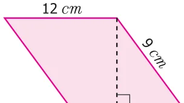
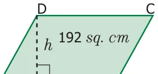
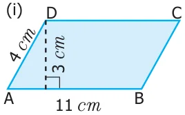
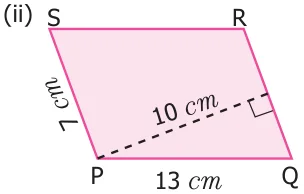
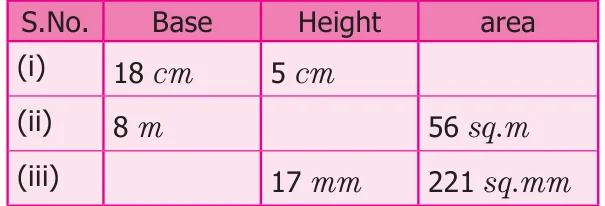

We know that, the area of the parellelogram \(= 72\) sq.cm
\(b \times h = 72\)

\(12 \times h = 72\)
\(h = \frac{72}{12} = 6\) cm
Therefore, the distance between the longer sides \(= 6\) cm. Fig.2.9
Example 2.5
The base of the parallelogram is thrice its height. If the area is 192 sq. cm, find the base and height.
Solution
Let the height of the parallelogram \(= h\) cm Then the base of the parallelogram \(= 3h\) cm

Area of the parallelogram \(= 192\) sq. cm h cm
\(b \times h = 192 Fig.2.10\)
\(3h \times h = 192 3h^{2} = 192 h^{2} = 64 h \times h = 8 \times 8 h = 8\) cm
base \(= 3h = 3 \times 8 = 24\) cm
Therefore, base of the parallelogram is 24 cm and height is 8 cm.
Most of the bridges are constructed using parallelogram as the structural design (For example, Pamban Bridge in Rameswaram) Engineers use properties of parallelograms to build and repair bridges.
- 1.Find the area and perimeter of the following parallelograms:


- 2.Find the missing values.

- 3.Suresh won a parallelogram-shaped trophy in a state level Chess tournament. He
knows that the area of the trophy is 735 sq. cm and its base is 21 cm. What is the height of that trophy?
- 4.Janaki has a piece of fabric in the shape of a parallelogram. Its height is 12 m and its
base is 18 m. She cuts the fabric into four equal parallelograms by cutting the parallel sides through its mid-points. Find the area of each new parallelogram.
- 5.A ground is in the shape of parallelogram. The height of the parallelogram is 14
metres and the corresponding base is 8 metres longer than its height. Find the cost of levelling the ground at the rate of ` 15 per sq. m.
Objective type questions
- 6.The perimeter of a parallelogram whose adjacent sides are 6 cm and 5 cm is
- (i)12 cm (ii) 10 cm (iii) 24 cm (iv) 22 cm
- 7.The area of a parallelogram whose base 10 m and height 7 m is
- (i)70 sq. m (ii) 35 sq. m (iii) 7 sq. m (iv) 10 sq. m
- 8.The base of the parallelogram with area is 52 sq. cm and height 4 cm is
- (i)48 cm (ii) 104 cm (iii) 13 cm (iv) 26 cm
- 9.What happens to the area of the parallelogram, if the base is increased 2 times and
the height is halved?
- (i)Decreases to half (ii) Remains the same
- (iii)Increases by two times (iv) none
- 10.In a parallelogram the base is three times its height. If the height is 8 cm then the
area is
- (i)64 sq. cm (ii) 192 sq. cm (iii) 32 sq. cm (iv) 72 sq. cm